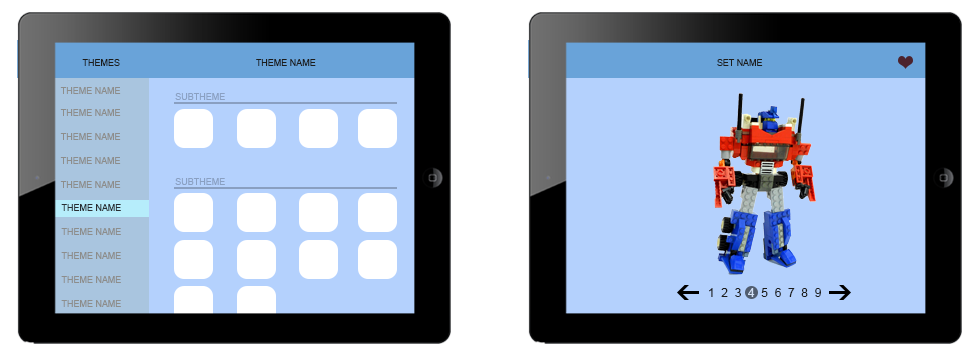

Build your favorite Lego sets with easy to use instructions from your iOS device.
This app allows you to browse instructions for various sets to allow you to build them.
This app is missing an easy way to search for sets and themes. It also does not have the ability to favorite your sets so that you can come back to them quickly. This was also built on an older version of iOS so it does not hold up to the current design standards.
Available on iOS - Average rating 4Built by the official LEGO Group, this app looks great, but only has two models available for you to use. The two models available are shown super well and in 3D and have the best user interface compared to the other LEGO apps we found.
Available on iOS and Android - Average rating: 3.7This app is one of the easiest ways of finding out information about the thousands of LEGO minifigures. You can track your collections and create a wish list of figures.
The biggest drawback with this app is that is super specific. You can only get information about the Minifigures and nothing else. While the information provided is in depth, it is very limited in what you can do with the information. This is specifically marketed towards die hard LEGO fans.
Available on iOS and Android -Average rating 3.8 - purchased and used on AndroidThe main layout will use a Master - Detail structure. The Master view will list all of the themes. When on is selected it will then list all of the available sets in the detail page organized by sub-themes. When a set is selected, the Detail view will show a paginated carousel of all of the sets instructions allowing you to flip through each step.
